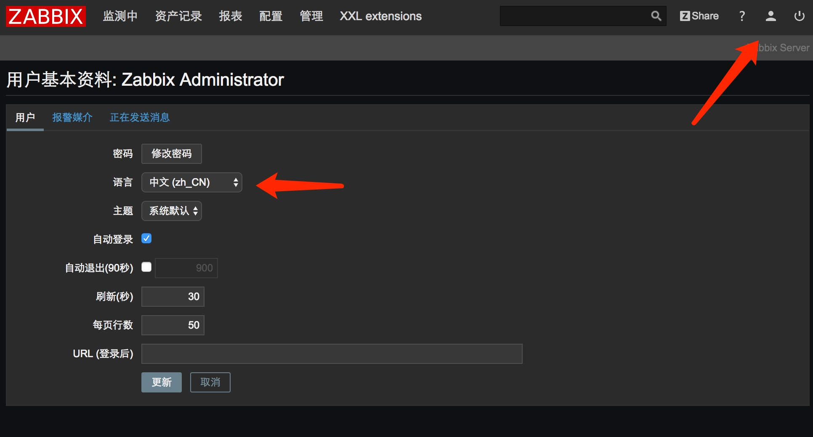
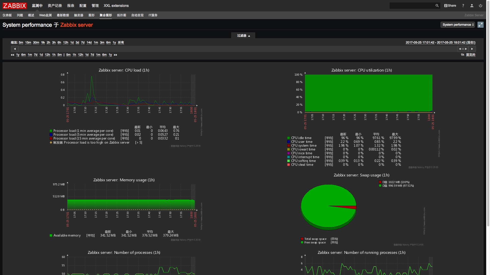

Docker安装zabbix-server
以前折腾过一次部署zabbix环境，觉得比较麻烦，特别是php环境，当时不是很熟悉，折腾了很久。
现在我们的业务上也需要zabbix，在部署的时候首先想到的就是能不能用docker来实现快速部署，查了一些资料，发现真的可行，于是便在自己的虚拟机上搭了一套。说明如下
环境
物理机：MacBookPro
- 虚拟ip：192.168.132.1
虚拟机：ubuntu 14.04 64：
- 虚拟ip：192.168.132.129
- docker ip：172.17.0.1
安装步骤
安装docker
网上有一大堆材料来说明，我就不在详细说明了。我用官方的一键脚本直接用来安装
curl -sSL https://get.docker.com/ | sh
当然如果怕从国外服务器下载慢的话，可以用阿里的镜像
curl -sSL http://acs-public-mirror.oss-cn-hangzhou.aliyuncs.com/docker-engine/internet | sh -
安装完成后执行 docker version 命令可以查看到docker的版本信息说明安装成功。
docker的三个基本概念
简单介绍一下docker的三个最关键的概念。
- image：镜像 就是别人制作好的环境，里面包含程序、资源和配置信息。上传的镜像仓库里面，你要用的话就下载。类似于用光盘安装操作系统时，光盘的内容就是个image。
- container：容器 这是将image运行进来后的实例，可以理解为image是一个程序的资源文件包，而容器是运行这个image后产生的一个进程实例。我们可以用同一份image运行多个container。
- Repository：仓库 用于存放大家制作好的image镜像，其他人有需求的时候直接在仓库中下载就可以了。docker官方提供了docker hub仓库，里面有大量的镜像可以使用。因为国外下载比较慢，你也可以使用国内的一些源来加速，比如阿里云就提供这样的服务。当然随着项目的需要，你也可以自己搭建私有仓库。
获取zabbix-server 镜像
经过分析，我在docker hub上找到了monitoringartist/zabbix-xxl镜像，它目前已经支持到最新的zabbix 3.2版本，而3.1版本之后zabbix官方就内置了中文的语言包，所以就用它了。
使用下面这个命令下载镜像
root@ubuntu:~# docker pull monitoringartist/zabbix-xxl
下载完成后通过docker image ls 命令查看本地的镜像列表
root@ubuntu:~# docker image ls
REPOSITORY TAG IMAGE ID CREATED SIZE
monitoringartist/zabbix-xxl latest 701478bab1b3 2 weeks ago 771MB
可以看到这个镜像打开后有771MB，还是蛮大的。
创建数据库
因为zabbix需要用到数据库，我物理机上已经装过了MySQL数据库，所以只需要再里面新增一个database和user就可以了。
CREATE DATABASE zabbix character set utf8 collate utf8_bin;
CREATE USER 'zabbix'@'%' IDENTIFIED BY '123456';
GRANT all privileges ON zabbix.* TO 'zabbix'@'%';
注： 创建DATABASE的时候最好指定字符集，我在第一次创建的时候没有指定，导致后面zabbix无法使用数据库。
配置容器
虽然可以通过docker run后面加一堆参数的方式来直接拉起容器，但是这样参数不便于管理。所以我使用docker-compose的方式来管理这个容器的配置。
新建一个配置文件 docker-compose.yml， 内容如下
version: '2'
services:
zabbix-server:
image: monitoringartist/zabbix-xxl:latest
container_name: zabbix-server-2
network_mode: "bridge"
restart: always
ports:
- "18888:80"
- "10052:10051"
volumes:
- /etc/localtime:/etc/localtime:ro
environment:
- ZS_DBHost=192.168.132.1
- ZS_DBUser=zabbix
- ZS_DBPassword=123456
- ZS_DBName=zabbix
说明：
- container_name 指定容器的名字。
- ports是做端口映射，这么配置之后，访问虚拟机的18888端口的请求就会转发给容器的80端口。
- enviroment里面我配置的主要是数据库的信息，因为MySQL是安装在物理机上的，所以使用了物理机的ip
注：docker-compose是官方提供的一个工具，初始安装docker的时候并不会同步安装这个工具，需要执行
pip install docker-compose命令来安装这个工具。
运行容器
使用docker-compose来加载上面写的配置文件，拉起一个容器。
root@ubuntu:~/app/zabbix/monitoringartist# docker-compose up -d
注：需要在配置文件的目录运行这个命令。
这样如果不出意外，容器运行后就会连接数据库，初始化表结构和数据，然后就可以使用了。
但是我在这里碰到了初始化表结构和数据失败的问题，导致服务无法使用，处理方法见附录。
了解容器的运行状态
查看容器运行日志
docker logs -f zabbix-server-2进入容器系统的命令行
因为我们的镜像其实是包含了一个微型的linux操作系统，然后再上面安装zabbix的，所以它是可以登陆进去并打开shell窗口的。docker exec -ti zabbix-server-2 /bin/bash这样就可以在容器里面执行shell命令，像维护linux主机一样来操作这个容器了。
进入zabbix的web页面
在物理机上打开浏览器，访问http://192.168.132.129:18888/
就可以打开web页面了，用默认用户名Admin/zabbix登陆进去就可以了。
zabbix-server基本设置
设置成中文
毕竟之前没怎么用过zabbix，纯英文的界面学习成本比较高，所以上来第一件事情就是将其设置成中文。
设置成中文非常简单，点右上角的小人，然后在语言那里选中文就好了

修改后页面就成了中文的了，但是还有一个问题需要处理，否则chart的界面里面会有乱码。参考链接 http://coolnull.com/3395.html
增加第一台主机
在配置-->主机中找到Zabbix server，点启用，就完成了将zabbix运行的主机加入监控的动作。
在主机聚合图里面就可以看到这些统计信息了。

附录
拉起容器后初始化数据库失败的问题处理
因为我第一次创建数据库的时候没有设置字符集，导致拉起容器的时候初始化数据库失败。
为了解决这个问题，我们需要进行容器的命令行，手动去执行sql文件，方法如下：
进入容器命令行，方法参见上面的介绍
root@ubuntu:~/app/zabbix/monitoringartist# docker exec -ti zabbix-server-2 /bin/bash [root@4fe2124b522a /]#查找初始化的sql文件
[root@4fe2124b522a /]# find / -name '*.sql' /usr/local/src/zabbix/database/mysql/images.sql /usr/local/src/zabbix/database/mysql/data.sql /usr/local/src/zabbix/database/mysql/schema.sql手动导入
[root@4fe2124b522a /]# cd /usr/local/src/zabbix/database/mysql/ [root@4fe2124b522a mysql]# mysql -u zabbix -p123456 zabbix2 -h 192.168.132.1 < schema.sql [root@4fe2124b522a mysql]# mysql -u zabbix -p123456 zabbix2 -h 192.168.132.1 < images.sql [root@4fe2124b522a mysql]# mysql -u zabbix -p123456 zabbix2 -h 192.168.132.1 < data.sql